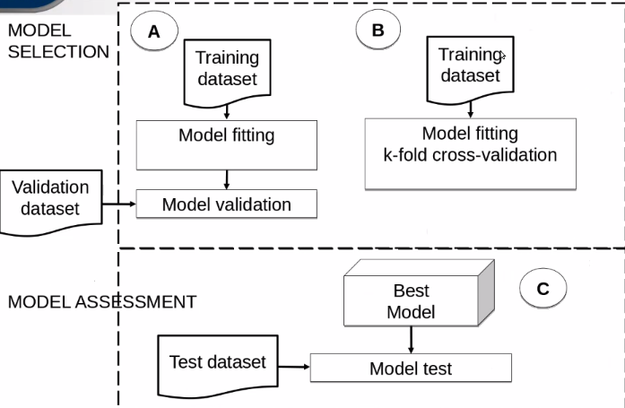
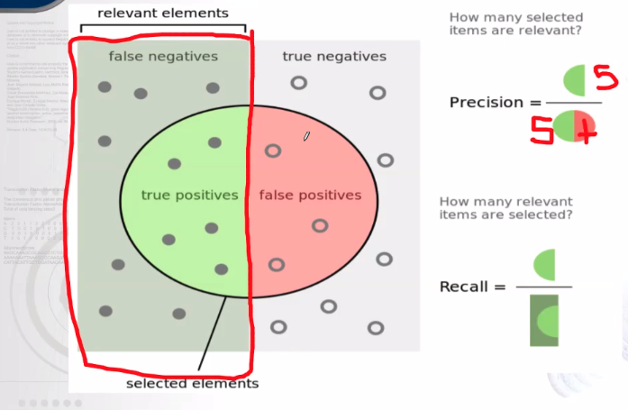
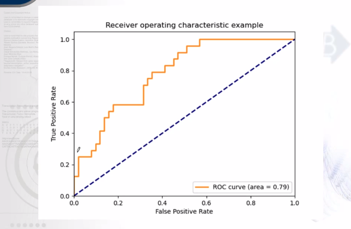
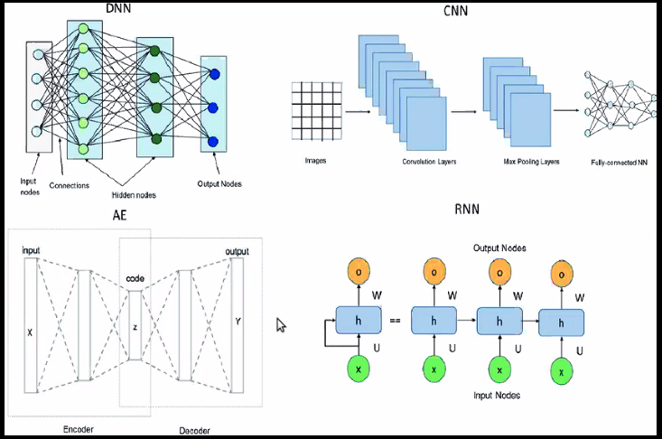
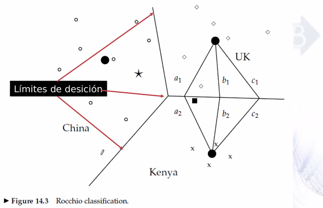
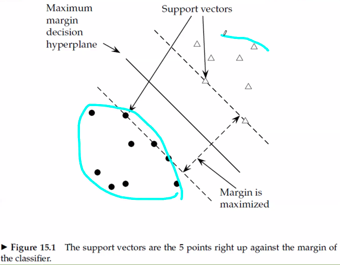

Clasificación Automática¶
Qué es la inteligencia artificial?¶
Area de las ciencias de computación dedicada a diseñar sisteamas de computo que aprendan, decidan y solucionen problemas.
Test de Turing (juego de la imitación)
hay 2 humanos y una maquina, el humano no debe saber cuál de los otros dos es la máquina.
Aprendizaje automático¶
Aprender en datos de entrada para lograr clasificar datos a futuro
Las máquinas han logrado
colorear
manejar un auto
jugar
Partes¶
nodos de entrada
nodos intermedios u ocultos
nodos de salida
Pesos
dan como salida un 0 o un 1
suma
Función de activación
output
Diferencia entre deep learning y red neuronal? si se usan matrices y funciones por qué no es más en R?
Red neuonal: funcion que trabaja con vectores internos que al final activan uno solo de los nodos de salida.
vector de 784 componentes
cada uno es un nodo de entrada a la red
Redes neuronales¶
video redes neuronales variables de entrada que definen una regla o un hiperplano, la neurona lo que hace es una regresión lineal, bias es otra conexión en el que la variable siempre está asignada a uno
Genómica¶
Reconocimiento de entidades u objetos
Enhancers en dna
histonas en cierta condición
detectar regiones coding vs non-coding
etiquetado de genomas completos
Datos inputados (faltantes)
ENCODE concurso para descubrir regiones ausentes en el cubo de información
Autoencoder: Recibe una matriz de entrada (resultados de métodos de expresión) y reconstruye la misma entrada como salida. Representación comparta y densa
Perspectiva¶
predicción pero no entendimiento del problema
da solución pero no explicación
correlaciona datos pero no causa
Hipótesis pero no llega a conclusiones
Tipo de arquitectura de red neuronal que combina distintos tipos¶
full conected
combinar diferentes arquitecturas
red neuronal convulusional
autoencoders
Clasificación Automática¶
Aprendizaje supervisado
Aprendizaje de máquina¶
Estudio y desarrollo de algoritmos que pueden “aprender” a partir de datos y hacer predicciones sobre ellos.
Esos algoritmos construyen un modelo a partir de los datos para hacer predicciones o “tomar decisiones.
Algoritmo: serie de pasos finitos y ordenados para resolver un problema Quién hace el algoritmo?
una persona
una computadora
¿Cuando puede usarse?
Problemas muy compejos
Muchos datos y muchas variables
Solución en relativamente poco tiempo comparado con lo que tardaría una persona en hacer el algoritmo
No se requiere un entendimiento completo del fenómeno (patrones de los datos) enlace aprendizaje de maquina
2 tipos¶
Supervisado: La computadora recibe ejemplos de entrada asignados a un valor o clase (target) a partir de los cuales aprende patrones para predecir el valor o clase de nuevos ejemplos
No supervisado : Solo recibe datos de entrada y tiene que descubrir patrones de relaciones en esos datos, por ejemplo, cómo se organizan los datos (clustering)
Spam vs no spam¶
input correo
algoritmo : sustituimos el conocimiento de cómo hacer el algoritmo por ejemplos o datos manualmente clasificados por una persona, se los paso a una algoritmo de predicción
salida es spam o no es spam
Aprendizaje supervisado¶
gatos vs no gatos
se divide en dos
clasificación: se predicen categorias o etiquetas (gatos vs no), cancer a partir de mastografía, genomas completos y regiones genomicas en clase
regresion: identificar valores numericos, predecir datos de covid a partir de datos que se tienen, indice de obesidad en méxico
Aprendizaje supervisado (supervised learning)¶
ejemplos: objeto, vector, instancia, registro
ejemplos de lo que quieres clasificar
clase: etiqueta asignada a cada ejemplo clasificado
tipos de galaxias
areas de especialidad médica
Características: atributos de los ejemplos que serán usados para clasificarlos
palabras del titulo, abstract, revista de publicación
características de regiones genómicas: frecuencia de ATCG
genes de expresión: valores de expresión
Conjunto de datos de entrenamiento
Conjunto de ejemplos previamente clasificados
Conjunto de datos de validación
Conjunto de ejemplos previamente clasificados usados para medir el rendimiento de varios modelos predictivos y seleccionar el mejor , para poner a competir los modelos
Conjunto de datos de evaluación
Conjunto de ejemplos preciamente clasificados que serán clasificados usando el mejor modelo predictivo para su renimiento, medida
Modelo clasificador
función que recibe los valores de las características de un ejemplo y regres su correspondeiente, producto del entrenamiento
support vector machine
neural network
Dos problemas de clasificación automática¶
Binaria
se predice entre dos clases
Multiclase
más de dos clase (muchas veces se ataca
one-of (single-label) clases mutuamente excluyentes
any-of (multilabel) clases no son mutuamente excluyentes
Modelo de selección¶
cuando tenemos pocos datos solo dividimos en dos
model fitting (k-fold cross validation)
k=10 entonces se divide en 10 folds, el 1 , 2,3,…,n
Utiliza k -1 folds para entrenar y un fold para evaluar
Luego cambiamos el fold de validación y los otros k-2 para evaluar
asi hasta que usamos todos para entrenar y todos para evaluar

Medidas de evaluación¶
Se calculan como verdaders positivas VN, FP y FN en clasifiación binaria
precision
\(\frac{tp}{tp+fp}\)
recall (sensitivity)
\(\frac{tp}{tp+fn}\)

F-score
\(\frac{precision* reacall}{precision+recall}\)
matriz de confusion
auroc
curvas de evaluacion
Precision-Recall curve
util cuando los datos son muy desbalanceados
muestra el balance entre la precision y el recall para diferentes umbrales
gran area bajo la curva representa un alto recall y una alta precision
(recall es bajo al principio pues lleva pocos)
Curva ROC(reciever operating characteristics)
ROC curve represent ala tasa de verdaderos positivos en el eje Y u la tasa de falsos positivos en el eje X
La esquina superior izquierda e el punto ideal

Un modelo con mejor precision dice que lo que dice que es clase positiva seguramente es clase positiva
Un modelo con mejor recall lo que te dice que es clase positiva no forzosamente lo será pero te da muchos, si equivocarte en tu predicción no es tan crucial y prefieres predecir muchos casos nuevos
f alta es el balance de la precision y el recall The 7 steps of machine learning
Entre más datos le des será mejor la predicción
Puede ser que se está sobreajustando la máquina

Vector Space Classification¶
Representa cada ejemplo como un vector en un espacio n-dimensional
Si la galaxia está descrita con 20 características entonces son 20 dimensiones la del espacio vectorial
profesion, edad, país (espacio vectorial de entrada de 3 dimensiones)
Características a partir de datos textuales
palabras (un espacio auto casa grand)
se construye un vocabulario (palabras únicas en todo el documento
puede también cuantificarse la frecuencia de aparición de una palabra
TF IDF se le pone un peso a una palabra
se calcula una distancia euclidiana
la menor distancia como más parecidos
\(\sqrt{\sum_{i}^{\infty}(A_{i}-B_{i})^2}\)
un espacio auto casa grande
un auto grande 1 0 1 0 1
un espacio grande 1 1 0 0 1
casa grande 0 0 0 1 1
Hipotesis de contigüidad:¶
Los ejemplos de la misma clase forman una región contigua y regiones de diferentes clases no se traslapan
En dos dimiensiones, un clasificador lineal es una linea (hiperplano) que separa dos clases
se le denomina problema linealmente separable si existe un hiperplano separador
hay un número infinito posible de hiperplanos separadores
Es necesario un criterio de selección del mejor hiperplano
Existe un límite de clases (class boundary), límite real entre dos clases
Ejemplos ruido
Estan en clavados en la otra clase
Rocchio classification¶
Divide un espacio vectorial en regiones asociadas a centroides (prototipos) uno por clase
Es simple y eficiente pero impreciso en clsases que no sean aproximadamente esferas con radio similar
Para clasificar un ejemmplo se determina la región donde aparece
la tarea de un clasificador basado en espacio de vectores es calcular buenos límites (boundaries
Buenos límites
con alto nivel de exactitud en la clasificación de nuevos datos (no observados en el training set)
usa centroides para definir los límites
Es el vector promedio de sus miembros
limite entre dos clases es el conjunto de puntos con igual distancia de dos centroides
Para clasificar un ejemplo se encuentra el centroide más cercano y le asigna dicha clase
Su problema es que las clases no se parecen a una esfera o a un círculo con radio similar, hay problemas

k nearest neightbour classification¶
Asigna la clase mayoritaria de los K vecinos cercanoos al ejemplo a clasificar en lugar de usar el centoide más cercano
Es menos eficiente en clasifiación de documentos
No requiere entrenamiento explícito
Si el training set es grande puede trabajar mejor que el rocchio en estructuras no esféricas
1NN es el one nearest neighbour
kNN es un k > a 1
k se selecciona con base en la experiencia y el conocimiento
\(k =3\) y \(k =5\) son los más comunes
iteración de aprendizaje para probar el mejor valor de \(k\)
se asigna una probabilidad a cada vecino
se puede ponderara al más cercano más peso y a los no tan cercanos menos
no hay estimación de parámetros como en Rocchio classification(centroides) o en Naive Bayes(probabilidad a priori y condicionales)
Simplemente memoriza todos los ejemplos del training set y compara el test set con ellos
memory-based learning o instance-based learning
Support Vector Machines¶
Busca un hiperplano que tenga la máxima distncia (máximo margen) con los puntos(ejemplos) que estén más cerca del mismo
Elementos
Margen (margin)
distancia de la superficie de decisión al punto (ejemplo) más cercano
Función de decisión
depende de un subconjunto de datos que definen la posición del separador
Vectores de soporte
son los puntos que sirven para maximizar la región
Te puede decir la probabilidad de que pertenezca a una clase o a otra
aunque puedas hacer una transformaciones dimensionales, existe pérdida de la dimensionalidad

Distancia Euclidiana¶
import numpy as np
from numpy.linalg import norm
d1 = np.array([1, 0, 1, 0, 1])
d2 = np.array([1, 1, 0, 0, 1])
d3 = np.array([0, 0, 0, 1, 1])
print(d1)
print(d2)
print(d3)
[1 0 1 0 1]
[1 1 0 0 1]
[0 0 0 1 1]
dist_e = norm(d2-d1)
print("Distancia euclidiana entre d1 y d2: {}".format(dist_e))
Distancia euclidiana entre d1 y d2: 1.4142135623730951
dist_e = norm(d2-d3)
print("Distancia euclidiana entre d1 y d3: {}".format(dist_e))
Distancia euclidiana entre d1 y d3: 1.7320508075688772
Clasificación k nearest neighbour¶
# Cargar una data set muy famoso de plantas
from sklearn.datasets import load_iris
iris = load_iris()
# Da infromación del set de datos
# 150 instancias, ejemplos
# 4 atributos o características numericos (4 predictores y 3 clase)
# El problema es de clasifiación es one of, son mutuamente excluyentes, solamente asignaremos una clase a cada ejemplo
print(iris.DESCR)
.. _iris_dataset:
Iris plants dataset
--------------------
**Data Set Characteristics:**
:Number of Instances: 150 (50 in each of three classes)
:Number of Attributes: 4 numeric, predictive attributes and the class
:Attribute Information:
- sepal length in cm
- sepal width in cm
- petal length in cm
- petal width in cm
- class:
- Iris-Setosa
- Iris-Versicolour
- Iris-Virginica
:Summary Statistics:
============== ==== ==== ======= ===== ====================
Min Max Mean SD Class Correlation
============== ==== ==== ======= ===== ====================
sepal length: 4.3 7.9 5.84 0.83 0.7826
sepal width: 2.0 4.4 3.05 0.43 -0.4194
petal length: 1.0 6.9 3.76 1.76 0.9490 (high!)
petal width: 0.1 2.5 1.20 0.76 0.9565 (high!)
============== ==== ==== ======= ===== ====================
:Missing Attribute Values: None
:Class Distribution: 33.3% for each of 3 classes.
:Creator: R.A. Fisher
:Donor: Michael Marshall (MARSHALL%PLU@io.arc.nasa.gov)
:Date: July, 1988
The famous Iris database, first used by Sir R.A. Fisher. The dataset is taken
from Fisher's paper. Note that it's the same as in R, but not as in the UCI
Machine Learning Repository, which has two wrong data points.
This is perhaps the best known database to be found in the
pattern recognition literature. Fisher's paper is a classic in the field and
is referenced frequently to this day. (See Duda & Hart, for example.) The
data set contains 3 classes of 50 instances each, where each class refers to a
type of iris plant. One class is linearly separable from the other 2; the
latter are NOT linearly separable from each other.
.. topic:: References
- Fisher, R.A. "The use of multiple measurements in taxonomic problems"
Annual Eugenics, 7, Part II, 179-188 (1936); also in "Contributions to
Mathematical Statistics" (John Wiley, NY, 1950).
- Duda, R.O., & Hart, P.E. (1973) Pattern Classification and Scene Analysis.
(Q327.D83) John Wiley & Sons. ISBN 0-471-22361-1. See page 218.
- Dasarathy, B.V. (1980) "Nosing Around the Neighborhood: A New System
Structure and Classification Rule for Recognition in Partially Exposed
Environments". IEEE Transactions on Pattern Analysis and Machine
Intelligence, Vol. PAMI-2, No. 1, 67-71.
- Gates, G.W. (1972) "The Reduced Nearest Neighbor Rule". IEEE Transactions
on Information Theory, May 1972, 431-433.
- See also: 1988 MLC Proceedings, 54-64. Cheeseman et al"s AUTOCLASS II
conceptual clustering system finds 3 classes in the data.
- Many, many more ...
from sklearn.model_selection import train_test_split
# Leemos conjunto de ejemplos
X = iris.data
print(X[:5])
# Leemos valores de clase para cada ejemplo
y = iris.target
print(y[:5])
# Separamos el dataset en dos: entrenamiento y evaluación
X_train, X_test, y_train, y_test = train_test_split(X, y, test_size=0.30, random_state=0)
[[5.1 3.5 1.4 0.2]
[4.9 3. 1.4 0.2]
[4.7 3.2 1.3 0.2]
[4.6 3.1 1.5 0.2]
[5. 3.6 1.4 0.2]]
[0 0 0 0 0]
from sklearn.neighbors import KNeighborsClassifier
# Clasificación K Nearest neighbors
k = 1
# Definición del clasificador
classifier = KNeighborsClassifier(n_neighbors=k)
# Entrenamiento del clasificador con lo datos de entrenamiento y valores de clase para cada ejemplo
classifier.fit(X_train, y_train)
# Predicción con el clasificador entrenado en los datos de evaluación
y_predict = classifier.predict(X_test)
print(classifier)
print(X_test[:5])
print(y_predict[:5])
print([])
KNeighborsClassifier(n_neighbors=1)
[[5.8 2.8 5.1 2.4]
[6. 2.2 4. 1. ]
[5.5 4.2 1.4 0.2]
[7.3 2.9 6.3 1.8]
[5. 3.4 1.5 0.2]]
[2 1 0 2 0]
[]
# Medidas de rendimiento del clasificador
from sklearn.metrics import accuracy_score
from sklearn.metrics import f1_score
from sklearn.metrics import precision_score
from sklearn.metrics import recall_score
print("Accuracy: {}".format(accuracy_score(y_test, y_predict)))
print("Precision: {}".format(precision_score(y_test, y_predict, average="macro")))
print("Recall: {}".format(recall_score(y_test, y_predict, average="macro")))
print("F-score: {}".format(f1_score(y_test, y_predict, average="macro")))
Accuracy: 0.9777777777777777
Precision: 0.9722222222222222
Recall: 0.9814814814814815
F-score: 0.975983436853002
from sklearn.metrics import classification_report
target_names = ['Iris-Setosa', 'Iris-Versicolour', 'Iris-Virginica']
print(classification_report(y_test, y_predict, target_names=target_names))
precision recall f1-score support
Iris-Setosa 1.00 1.00 1.00 16
Iris-Versicolour 1.00 0.94 0.97 18
Iris-Virginica 0.92 1.00 0.96 11
accuracy 0.98 45
macro avg 0.97 0.98 0.98 45
weighted avg 0.98 0.98 0.98 45
from sklearn.metrics import confusion_matrix
import matplotlib.pyplot as plt
from sklearn.metrics import plot_confusion_matrix
print(confusion_matrix(y_test, y_predict))
plot_confusion_matrix(classifier, X_test, y_test, cmap=plt.cm.Blues,
display_labels=['Iris-Setosa', 'Iris-Versicolour', 'Iris-Virginica'])
[[16 0 0]
[ 0 17 1]
[ 0 0 11]]
<sklearn.metrics._plot.confusion_matrix.ConfusionMatrixDisplay at 0x7f8e33a02130>

# Predecir valor de clase de nuevo ejemplo
print(classifier.predict([[10.0,5.0,7.8,0.1]]))
# PRedecir probabilidades de clase de nuevo ejemplo
print(classifier.predict_proba([[10.0,5.0,7.8,0.1]]))
# PRedecir probailidad de clases de nuevo ejemplo
print(classifier.kneighbors([[10.0,5.0,7.8,0.1]]))
[2]
[[0. 0. 1.]]
(array([[3.37934905]]), array([[71]]))
Clasificación SVM¶
from sklearn.datasets import load_iris
# cargar set de datos e imprimir descripción
iris = load_iris()
print(iris.DESCR)
.. _iris_dataset:
Iris plants dataset
--------------------
**Data Set Characteristics:**
:Number of Instances: 150 (50 in each of three classes)
:Number of Attributes: 4 numeric, predictive attributes and the class
:Attribute Information:
- sepal length in cm
- sepal width in cm
- petal length in cm
- petal width in cm
- class:
- Iris-Setosa
- Iris-Versicolour
- Iris-Virginica
:Summary Statistics:
============== ==== ==== ======= ===== ====================
Min Max Mean SD Class Correlation
============== ==== ==== ======= ===== ====================
sepal length: 4.3 7.9 5.84 0.83 0.7826
sepal width: 2.0 4.4 3.05 0.43 -0.4194
petal length: 1.0 6.9 3.76 1.76 0.9490 (high!)
petal width: 0.1 2.5 1.20 0.76 0.9565 (high!)
============== ==== ==== ======= ===== ====================
:Missing Attribute Values: None
:Class Distribution: 33.3% for each of 3 classes.
:Creator: R.A. Fisher
:Donor: Michael Marshall (MARSHALL%PLU@io.arc.nasa.gov)
:Date: July, 1988
The famous Iris database, first used by Sir R.A. Fisher. The dataset is taken
from Fisher's paper. Note that it's the same as in R, but not as in the UCI
Machine Learning Repository, which has two wrong data points.
This is perhaps the best known database to be found in the
pattern recognition literature. Fisher's paper is a classic in the field and
is referenced frequently to this day. (See Duda & Hart, for example.) The
data set contains 3 classes of 50 instances each, where each class refers to a
type of iris plant. One class is linearly separable from the other 2; the
latter are NOT linearly separable from each other.
.. topic:: References
- Fisher, R.A. "The use of multiple measurements in taxonomic problems"
Annual Eugenics, 7, Part II, 179-188 (1936); also in "Contributions to
Mathematical Statistics" (John Wiley, NY, 1950).
- Duda, R.O., & Hart, P.E. (1973) Pattern Classification and Scene Analysis.
(Q327.D83) John Wiley & Sons. ISBN 0-471-22361-1. See page 218.
- Dasarathy, B.V. (1980) "Nosing Around the Neighborhood: A New System
Structure and Classification Rule for Recognition in Partially Exposed
Environments". IEEE Transactions on Pattern Analysis and Machine
Intelligence, Vol. PAMI-2, No. 1, 67-71.
- Gates, G.W. (1972) "The Reduced Nearest Neighbor Rule". IEEE Transactions
on Information Theory, May 1972, 431-433.
- See also: 1988 MLC Proceedings, 54-64. Cheeseman et al"s AUTOCLASS II
conceptual clustering system finds 3 classes in the data.
- Many, many more ...
from sklearn.model_selection import train_test_split
# Leemos conjunto de ejemplos
X = iris.data
print(X[:5])
# Leemos valores de clase para cada ejemplo
y = iris.target
# imprimimos los 5 primeros
print(y[:5])
# Separamos el dataset en dos: entrenamiento y evaluación (separación en 70/30)
X_train, X_test, y_train, y_test = train_test_split(X, y, test_size=0.30, random_state=0)
[[5.1 3.5 1.4 0.2]
[4.9 3. 1.4 0.2]
[4.7 3.2 1.3 0.2]
[4.6 3.1 1.5 0.2]
[5. 3.6 1.4 0.2]]
[0 0 0 0 0]
from sklearn.svm import SVC
# Clasificación SVM
# Definición del clasificador
# separación lineal de las clases, maquina de soporte clásica, un kernel es una transformación del espación. De un espacio hacia a otro
# se le llama truco de kernel pues al transfarmar es posible que en el espacio transformado sea más fácil dividir los datos
#svm_classifier = SVC(kernel="linear")
# Se añade el calculo de probabilidades, solamente sirve para calcular la distancia entre tus datos de entrenamiento con los datos de soporte, generalmente se desactiva pues es más tardada la corrida
svm_classifier= SVC(kernel="linear", probability= True)
# Entrenamiento del clasificador con lo datos de entrenamiento y valores de clase para cada ejemplo
svm_classifier.fit(X_train, y_train)
# Predicción con el clasificador entrenado en los datos de evaluación
y_predict = svm_classifier.predict(X_test)
# No es lo acostumbrado pero podemos visualizar así para comparar clases verdaderas vs predichas
# imprimir los valores verdaderos
print(y_test)
# imprimir los valores predichos o de clase
print(y_predict)
[2 1 0 2 0 2 0 1 1 1 2 1 1 1 1 0 1 1 0 0 2 1 0 0 2 0 0 1 1 0 2 1 0 2 2 1 0
1 1 1 2 0 2 0 0]
[2 1 0 2 0 2 0 1 1 1 2 1 1 1 1 0 1 1 0 0 2 1 0 0 2 0 0 1 1 0 2 1 0 2 2 1 0
2 1 1 2 0 2 0 0]
# Medidas de rendimiento del clasificador
from sklearn.metrics import accuracy_score
from sklearn.metrics import f1_score
from sklearn.metrics import precision_score
from sklearn.metrics import recall_score
# Buenos valores de predicción
print("Accuracy: {}".format(accuracy_score(y_test, y_predict)))
print("Precision: {}".format(precision_score(y_test, y_predict, average="macro")))
print("Recall: {}".format(recall_score(y_test, y_predict, average="macro")))
# Es el promedio
print("F-score: {}".format(f1_score(y_test, y_predict, average="macro")))
Accuracy: 0.9777777777777777
Precision: 0.9722222222222222
Recall: 0.9814814814814815
F-score: 0.975983436853002
from sklearn.metrics import classification_report
# PAra comparar dos estudios es importante utilizar la misma semilla en ambos
target_names = ['Iris-Setosa', 'Iris-Versicolour', 'Iris-Virginica']
print(classification_report(y_test, y_predict, target_names=target_names))
precision recall f1-score support
Iris-Setosa 1.00 1.00 1.00 16
Iris-Versicolour 1.00 0.94 0.97 18
Iris-Virginica 0.92 1.00 0.96 11
accuracy 0.98 45
macro avg 0.97 0.98 0.98 45
weighted avg 0.98 0.98 0.98 45
from sklearn.metrics import confusion_matrix
import matplotlib.pyplot as plt
from sklearn.metrics import plot_confusion_matrix
print(confusion_matrix(y_test, y_predict))
plot_confusion_matrix(svm_classifier, X_test, y_test, cmap=plt.cm.Blues,
display_labels=['Iris-Setosa', 'Iris-Versicolour', 'Iris-Virginica'])
[[16 0 0]
[ 0 17 1]
[ 0 0 11]]
<sklearn.metrics._plot.confusion_matrix.ConfusionMatrixDisplay at 0x7f8e33b3b9d0>
from sklearn.manifold import TSNE
# Transformación usada para reducir la dimensión y crear un plot en baja dimensión que nos muestre el espacio vectorial en el que estamos trabajando
# imprimir las dimensiones que tenemos originalemente que son 45 ejemplos y 4 dimensiones y posteriormente la transformación a 45 ejemplos pero 2 dimensiones
print(X_test.shape)
# Se aplica con dos componentes y se transforman los datos de evaluación
X_test_embedded = TSNE(n_components=2).fit_transform(X_test)
X_test_embedded.shape
(45, 4)
(45, 2)
import pandas as pd
import seaborn as sns
# se visualiza una reducción en el espacio en donde la clase 0 se encuentra algo separada, la 1 y la 2 están traslapadas pero esta transformación ayuda a visualizar que no es tanto el traslape
# hay un punto que confunde el clasificador que está en el grupo de 1 pero pertenece al 2
plt.figure()
tsne_result_df = pd.DataFrame({'tsne_1': X_test_embedded[:,0], 'tsne_2': X_test_embedded[:,1], 'label': y_test})
sns.scatterplot(x='tsne_1', y='tsne_2', hue='label', data=tsne_result_df)
<matplotlib.axes._subplots.AxesSubplot at 0x7f8e357d7d00>
# Predicción de ejemplo y probabilidades para las clases
y_predict= svm_classifier.predict([[10.0,5.0,7.8,0.1]])
print(y_predict)
# Probabilidades para las clases
prob= svm_classifier.predict_proba(([[10.0,5.0,7.8,0.1]]))
print(prob)
[1]
[[0.00100534 0.96290842 0.03608624]]
# Numero de vectores de soporte por clase
# PAra la clase que mejor se separa solo requirió 2 vectores de soporte, utilizó el 46 y el 66
# en un problema de clasificación de proteínas los vectores soporte son las menos prototípicas de su clase pues son las que están en el límite de las otras clases
print(svm_classifier.n_support_)
#Índices de vectores de soporte
print(svm_classifier.support_)
# Vectores de soporte
print(svm_classifier.support_vectors_)
[ 2 9 10]
[46 66 7 21 29 32 34 63 87 88 96 3 9 10 11 12 14 31 44 53 74]
[[4.5 2.3 1.3 0.3]
[5.1 3.3 1.7 0.5]
[6.3 3.3 4.7 1.6]
[6.1 3. 4.6 1.4]
[6.9 3.1 4.9 1.5]
[5.1 2.5 3. 1.1]
[6.2 2.2 4.5 1.5]
[5.7 2.8 4.5 1.3]
[6.3 2.5 4.9 1.5]
[6.7 3. 5. 1.7]
[5.9 3.2 4.8 1.8]
[6. 2.2 5. 1.5]
[6.3 2.7 4.9 1.8]
[6.3 2.8 5.1 1.5]
[4.9 2.5 4.5 1.7]
[6.3 2.5 5. 1.9]
[6.5 3. 5.2 2. ]
[5.9 3. 5.1 1.8]
[6.5 3.2 5.1 2. ]
[7.2 3. 5.8 1.6]
[6. 3. 4.8 1.8]]
# vectores soporte para la clase cetosa
print(X_train[46])
print(X_train[66])
[4.5 2.3 1.3 0.3]
[5.1 3.3 1.7 0.5]
# Hiperparámetros del modelo SVM
# Son parametros de funciones que yo puedo cambiar para mejorar el entrenamiento
# kernel lineal
# proabbilidad
# "C" puede aumentar o disminuir, es un un valor por el que se multiplican aquellos puntos que caen adentro del margen de decisión
# Puedes penalizar mucho aquellos ejemplos que queden mal clasificados, si queremos una SVM que clasifique relativamente bien pero que no sea tan estrictamente buena, lo disminuimos
# Si lo creces mucho entonces sobreajustas el modelo (overfitting), predices muy bien tus datos de entrenamiento pero nuevos datos predicen mal (lo puedes subir a 1000 pero tus datos de evaluación cae tu score
# overfitting: score de entrenamiento muy alto pero score de evaluación muy bajo )
# Afinación de hiperparametros es probar muchos valores de C para ver con cual valor predice mejor la máquina
# El desbalance, cambias metrica de evaluación a una geométrica, oversamppling, reduciendo dimensionalidades, creando vectores artificiales
svm_classifier.get_params()
{'C': 1.0,
'break_ties': False,
'cache_size': 200,
'class_weight': None,
'coef0': 0.0,
'decision_function_shape': 'ovr',
'degree': 3,
'gamma': 'scale',
'kernel': 'linear',
'max_iter': -1,
'probability': True,
'random_state': None,
'shrinking': True,
'tol': 0.001,
'verbose': False}
Red neuronal convulusional¶
notebook github 01 y 05 ejemplo perros
[A comprehensive guide to convolutional Neural networks the ELI5 way](https://towardsdatascience.com/a-comprehensive-guide-to-convolutional-neural-networks-the-eli5-way-3bd2b1164a53notebook github 01 y 05 ejemplo perros)
4 capas
dos convolusionales
dos pooling
Convolution+relu: toman los bordes de la figura pooling
Convolution+relu: pooling
Capa de aplanado: convierte la matriz en un vector Capa fully connected: todos los nodos están conectados con todos Softmax: convierte en números continuos float que representan ciertos umbrales y con ello predcimos la categoría, coche, van, truck
Funcion de relu te da un valor de 0 a 1 pooling te da una capa que te da una representación matricial final